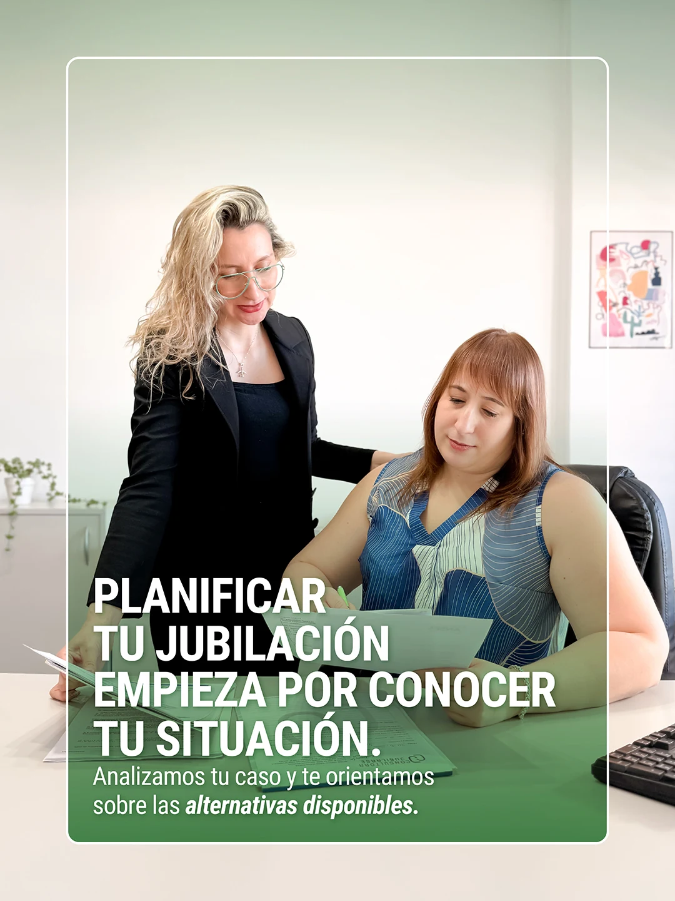
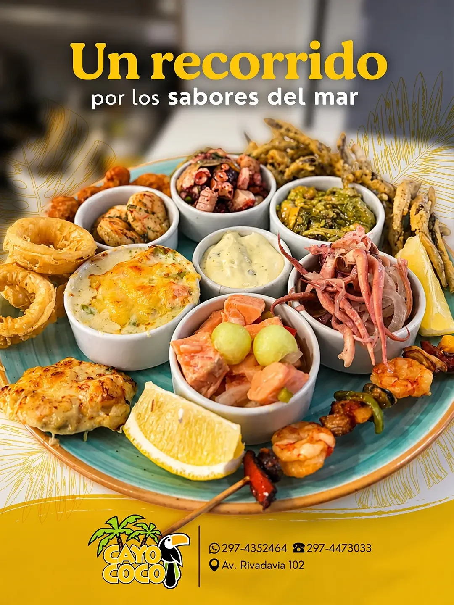
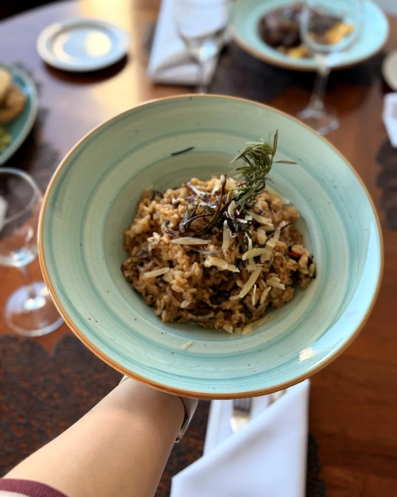
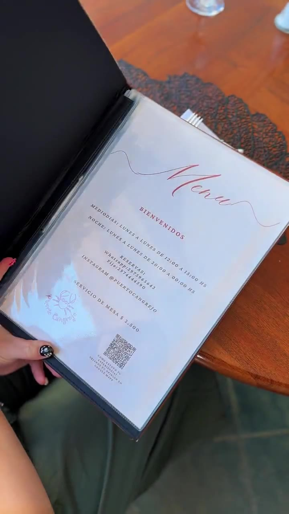

Que te encuentren.
Acercar tus servicios a las personas que los necesitan.
MARKETING DIGITAL
¿Querés que tus redes acompañen mejor los objetivos comerciales de tu empresa?
Partimos de lo que necesita tu negocio para definir qué comunicar, a quién y en qué canales. Combinamos contenido y publicidad paga según los objetivos de cada proyecto.

Consultora Jubilarse
Cayo Coco
Puerto Cangrejo
Puerto CangrejoEL PUNTO DE PARTIDA
Partimos de lo que necesitás mejorar para definir dónde enfocar la comunicación.
Acercar tus servicios a las personas que los necesitan.
Mostrar qué ofrecés y cómo podés ayudar.
Facilitar una consulta, una visita o una compra.
UNA ESTRATEGIA INTEGRAL
Contenido y publicidad paga, con objetivos y canales definidos para tu empresa.
FORMA DE TRABAJO
Un proceso compartido con tu equipo: reuniones online, calendario de contenidos, producción y revisión de resultados.

Nos reunimos por Google Meet para conocer tu empresa, conversar sobre sus necesidades y acordar los objetivos de comunicación.

Armamos con vos un cronograma compartido de temas, formatos y fechas. Coordinamos prioridades y revisamos juntos qué se va a publicar.
Relevamos material fotográfico de forma presencial o recibimos el contenido que nos enviás. Con ese material diseñamos las piezas para redes.
En reuniones online quincenales o mensuales, revisamos el desempeño del contenido y los resultados del mes para acordar los próximos ajustes.
EL EQUIPO
La coordinación conecta las decisiones de negocio con la planificación y la producción de comunicación.

Comodoro Rivadavia
Diseño web y de aplicaciones.

Buenos Aires
Estrategia y coordinación general del equipo. Planificación, comunicación y producción junto a Hola Agencia.

Comodoro Rivadavia
Relevamiento fotográfico y audiovisual.

Buenos Aires
Coordinación y seguimiento del trabajo con el cliente.

Buenos Aires
Diseño de piezas y edición de contenidos.
PRODUCCIONES REALES
Una selección del trabajo en redes. Elegí un cliente y recorré sus placas y reels.
EL ALCANCE DE TU PROPUESTA
Una propuesta según lo que necesita tu negocio.
El alcance se define según tus objetivos, los canales que utilizás y el acompañamiento que necesitás.
Planificación, publicación y seguimiento de contenido orgánico para mantener una presencia activa y coherente con tu marca.
Desarrollo de ideas, textos, placas, carruseles, historias y reels adaptados a cada canal.
Producción de material para mostrar tus productos, servicios, espacios y equipo. Cobertura de eventos y actividades para redes sociales.
Planificación, configuración y seguimiento de campañas pagas en Instagram y Facebook, según los objetivos y el público de tu negocio.
Anuncios para acercar tu propuesta a personas que buscan productos o servicios como los tuyos.
Actualización de información, fotografías y publicaciones, y acompañamiento en la gestión de reseñas para cuidar tu presencia en Google y Maps.
Revisión y optimización de contenidos e información para mejorar la presencia de tu negocio en las búsquedas relevantes.
La inversión publicitaria se presupuesta por separado de la gestión de campañas.
HABLEMOS DE TU EMPRESA
No todos los negocios necesitan lo mismo. Conversemos para definir qué servicios conviene combinar y por dónde empezar.
Consultar por mi negocio